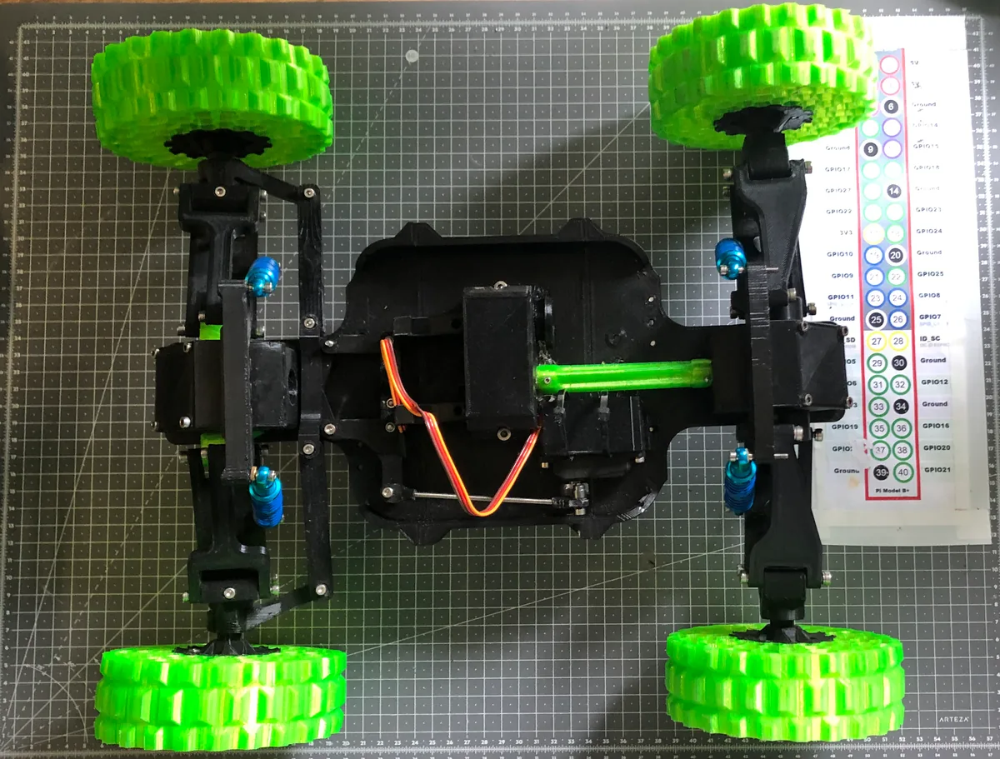
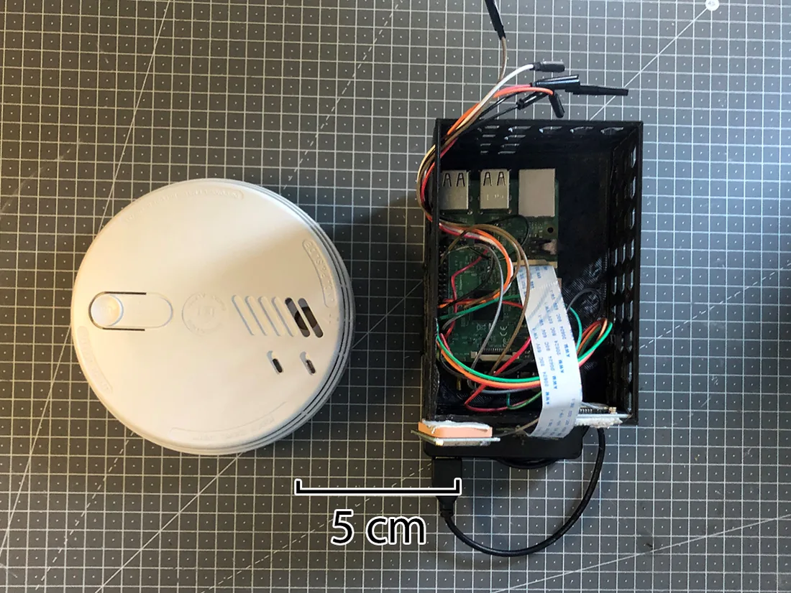
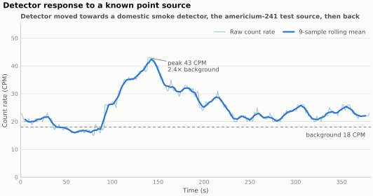
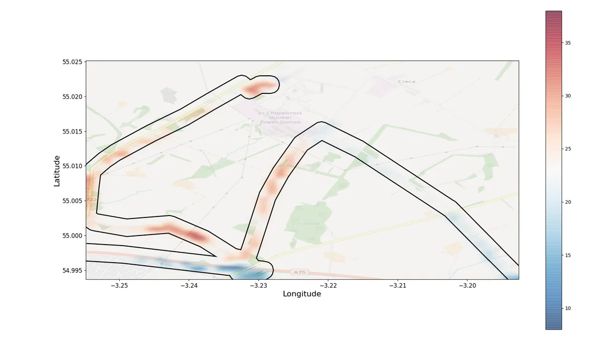
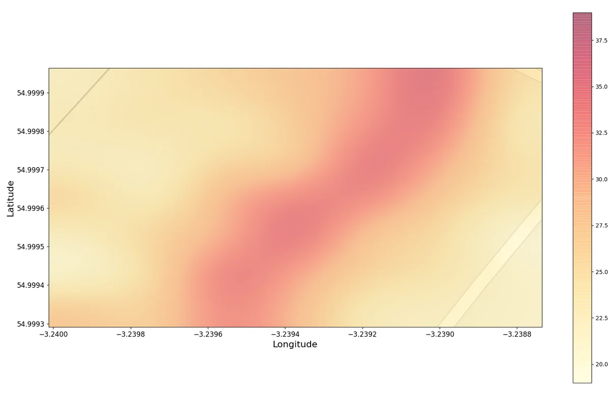

Telerobotics · Sensing
A £281 rover for georeferenced radiation mapping
Commercial radiation telerobots work well and are priced for national laboratories. This one is a Raspberry Pi, a Geiger tube and a 3D-printed chassis, and it picked up a buried pipeline that the most recent site survey does not record.
 3D-printed tyre
ESC and fan
Motor
Battery
Damper
3D-printed tyre
ESC and fan
Motor
Battery
Damper
The problem
Radiation is difficult to survey. There is nothing to see or smell, and the areas most worth measuring are the ones where people should spend the least time, so the work suits a telerobot. The equipment that does it properly is beyond the budget of a local authority, a university group or anyone wanting to check a site independently.
The aim was a radiation monitoring telerobot a person could actually build: a mobile platform under £150 of parts, a sensor unit under £200, and an output a non-specialist could read. The whole thing followed an open-source methodology so somebody else could rebuild it or point it at a different measurement entirely.


The rover and the logger
The design settled into a rover and a detachable georeferenced radiation logger that rides on it. Keeping them separate mattered. The logger is the part that has to be trustworthy, and it can be characterised on its own. Because it detaches, it can also be carried in a backpack or fixed to a car when a survey covers open ground.
- Count rate and dose-rate estimate logged continuously, every reading tagged to a GPS fix.
- Teleoperation with a Bluetooth games controller, relayed over 4G through a Raspberry Pi Zero, so range isn't bounded by radio line of sight.
- An operator GUI written in tkinter, carrying a live first-person video stream alongside current count statistics, which makes driving at distance workable.
- Interpolated heat maps as the output, plus interactive maps for inspecting the underlying readings.
Latency and standoff
Driving a vehicle you can't see, through a video feed, falls apart quickly if the delay between input and picture is long enough to notice. The first working version was well over that threshold, and most of the engineering effort went into the optimisation that followed, which brought latency down to 0.11 s. Past that point the operator no longer has to compensate for it, and the rover was driven at distances exceeding 300 metres.
Checking the detector responds
Before any mapping is worth doing, the detector has to be shown to react to a source. A domestic smoke detector contains a small sealed americium-241 element, which makes it a convenient known quantity to move towards and away from.

Into the field
Chapelcross was the obvious site. One of the earliest British nuclear power stations, running Magnox reactors from 1959 to produce both electricity and weapons-grade plutonium-239, in decommissioning since 2004 with work expected to continue past 2095, and now home to the last radioactive waste pond in Scotland.
The platform had to be robust enough to take repeatable readings while crossing rough ground, which is what most of the site consists of.
I surveyed roughly three square kilometres around the perimeter, and separately around Southampton for a baseline of ordinary background.

The pipeline
One area came back consistently warmer than its surroundings, so I went back and mapped it properly: 3,600 square metres, a reading every four seconds, walking adjacent lines five metres apart, using the interface to hold a constant line of latitude so the passes stayed straight.
The result was a band rather than a patch, running diagonally across the survey area at count rates 35 to 52 per cent above the surroundings. Contamination doesn't usually deposit in a straight line, so the shape pointed at something buried underneath it.

The 2015 survey of the site doesn't document anything on that line. A 2002 Radiological Habits Survey does, in passing: an underground effluent pipeline whose route coincides with the band.
The corroboration is imperfect. The 2002 survey used a gamma-only counter, so its readings are not directly comparable with the sensor unit's. What it does provide is a trend, a 60 per cent reduction in dose rate moving south towards the point where the pipeline crosses the A75, and that trend appears in my data too.
Validation
Validating a cheap instrument needs a better one to compare against, and without a dosimeter the absolute accuracy of the Geiger counter could not be established directly. What could be established was agreement and repeatability, which is most of what a survey map depends on.
Against a comparable commercial unit, across 794 collected data points, the readings correlated at a Spearman's rank coefficient of 0.76. Precision came out at ±7.3 per cent of recorded dose rate, and the sensor unit placed a reading within 8 metres of its true position 95 per cent of the time. The combined build cost was £281 across both devices, inside the £350 target and around 28 per cent of what the commercial offering costs.
It isn't accurate enough to certify a site as safe, but it can show where a proper survey should look.
← All projects